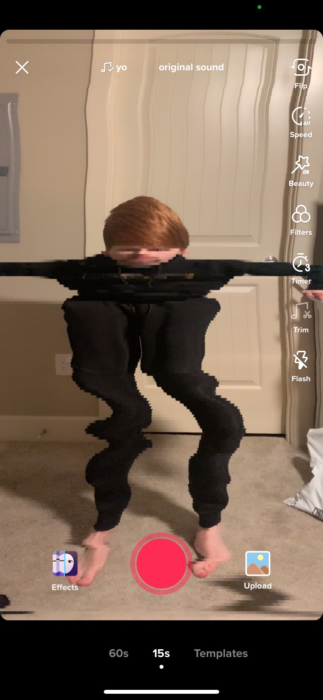

Hello, I'm Truman
About me
I grew up in the small town of Lebanon Oregon. As a kid I was always interested in building things and experimenting, I even built my first computer when I was fourteen.
I started working at the age of sixteen at the local school district in the IT department. Working there I learned how to work collaboratively in a stressful environment.
Instead of graduating hight school, I opted to enroll in community college at the age of sixteen where I would get my high school diploma while figuring out which disipline suited me best.
I ultimately decided to major in computer science because I greatly enjoyed programming. I spent my last two years of college enrolled at Oregon State University where I met some great teachers who made me fall in love with problem solving.
Experience
Education
I am currently a Student at Oregon State University, expecting to graduate with a degree in computer science with a focus on artificial intelligence in December 2021.

Work
I currently work at the Lebanon Community School District where I am an IT Intern. My duties include assisting school district staff and teachers with technical difficulties as well as training and managing new interns.
Hobbies
My list of too many hobbies includes playing guitar, model kit building, blogging, video games and game making.
But my favorite is probably dice making, pictured below is an example of a set that I made for a friend.
Dice
Contact & Sites
Email: hess2918@gmail.com
Blog: https://trumansgamedesign.wordpress.com/
School Github: https://github.com/trumanhess
Personal Github: https://github.com/trumanhess27